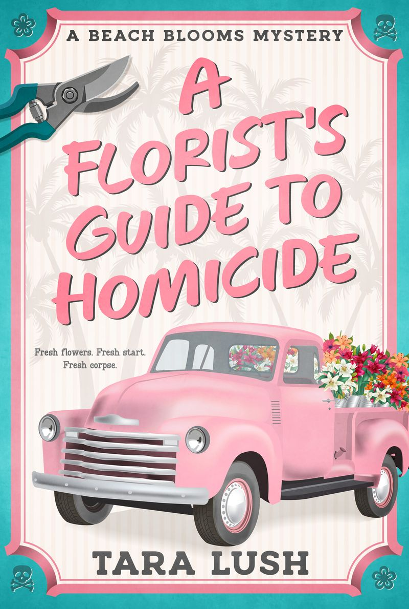
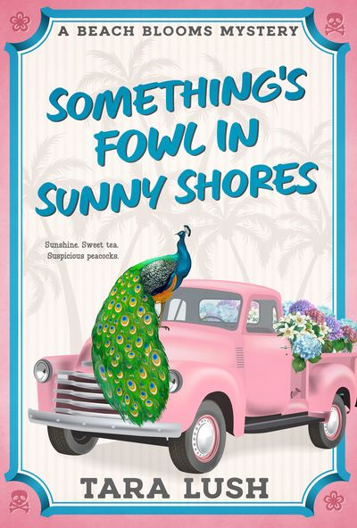

Meet
Clara Whitman
A Gen X woman rebuilding her life with a vintage flower truck.
Audio rights available
Book One in the Beach Blooms series
A new Florida cozy mystery series from USA Today bestselling author Tara Lush.
Two midlife women. A vintage flower truck. A pink golf cart. And murder.

The Series
A quirky Florida barrier island where fresh starts, old friendships, and murder bloom in unexpected places.
Meet
A Gen X woman rebuilding her life with a vintage flower truck.
And
Her irrepressible older friend — a former dispatcher turned candy maker who cruises the island in a pink golf cart.
Together, they become unlikely amateur sleuths in a warm, funny contemporary cozy series centered on:
The Books
Book One
Clara Whitman traded a failing marriage and Boston winters for a pink 1972 flower truck and a fresh start in Sunny Shores, Florida. Her plan: sell flowers, learn to sweat gracefully, and absolutely not get involved in anything.
The plan lasts about a month.
After a spectacularly hostile encounter with Sherri Sanford, Sunny Shores’ only other florist, Clara finds her dead on the beach. And when the police learn that the new-in-town flower lady had plenty to gain from her rival’s sudden exit, Clara’s fresh start begins to look a lot like motive.
Clearing her name would probably be easier without help. Instead, she’s got Paisley, her sixty-something roommate who has zero concept of boundaries. She also has Herbie, a ten-pound Brussels Griffon with a sour expression and a penchant for snacks. And there’s Detective Gabriel Cypress, who is alternately amused and alarmed by Clara and Paisley’s sleuthing.
Between a Garden Club with more secrets than mulch, a wedding the whole town is obsessing over, and a killer who may not be finished, Clara is learning the first rule of small-town Florida: everybody’s growing something. Not all of it is legal.
A Florist’s Guide to Homicide launches the Beach Blooms series, funny contemporary mysteries featuring Florida weirdness, zero gore, a touch of slow-burn romance, and a heroine discovering that starting over at midlife might be the best thing she’s ever done. Perfect for readers who love quirky small towns, found family, midlife sleuths, and mysteries with plenty of laughs.

Prequel Novella
Clara Whitman came to Florida for a fresh start. She did not come for the screaming.
Newly divorced and barely unpacked in Sunny Shores, Clara hears bloodcurdling cries outside her new home and frantically dials 911.
The culprit? A flock of peacocks that has apparently decided the quiet Clam Bayou neighborhood belongs to them.
But when the birds cause even more mayhem, Clara’s eccentric new roommate, Paisley, becomes convinced there’s more going on than badly behaved wildlife. Clara grew up around cops. She prefers facts to wild theories.
Until the facts start getting weird.
Soon Clara is riding shotgun in Paisley’s pink golf cart, questioning neighbors, navigating petty neighborhood feuds, and discovering that her new roommate may have absolutely no respect for boundaries…
…but she’s surprisingly good at solving mysteries.
Something’s Fowl in Sunny Shores is a funny, feel-good mystery novella packed with Florida weirdness, peacocks behaving badly, a judgmental Brussels Griffon, and the beginning of Clara and Paisley’s unlikely friendship.
Welcome to Sunny Shores. Things get strange here.
What readers are saying about the prequel
I LAUGHED so hard and enjoyed this book so much.
What a FUN read!
Fast, fun read with great characters!
[It] gives you a great taste of what this traditional cozy mystery is all about.
Audio Rights
Tara is seeking an audiobook publishing partner for Beach Blooms rather than independently producing the series.